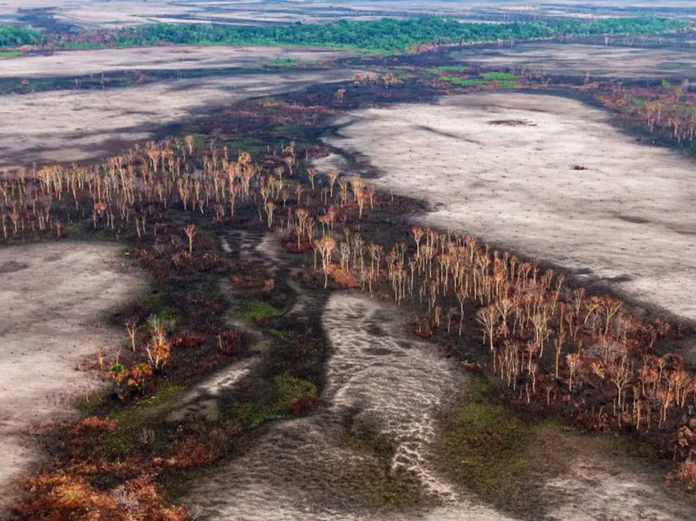

Los incendios forestales pueden tener múltiples causas, entre las principales se encuentran:
- Causas naturales: Rayos, altas temperaturas y erupciones volcánicas pueden generar incendios espontáneos.
- Actividad humana: Quemas agrícolas descontroladas, fogatas mal apagadas, colillas de cigarro y la deforestación pueden ser responsables de la propagación del fuego.
- Cambio climático: El aumento de la temperatura global y las sequías prolongadas hacen que los bosques sean más propensos a incendios.
- Acciones intencionales: Algunos incendios son provocados con fines económicos, como la expansión de la ganadería o la urbanización.
